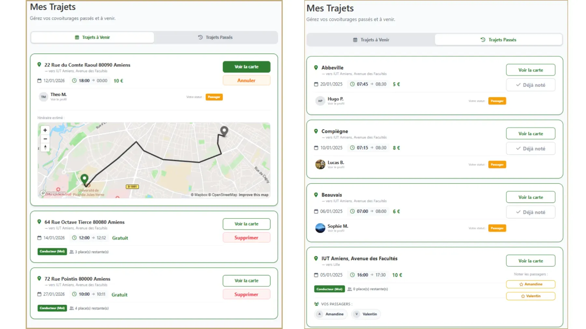

01. La Genèse de l'Histoire
L'histoire de Campus'Go commence par un constat simple et quotidien : observer les parkings de l'IUT d'Amiens saturés de voitures ne contenant souvent qu'une seule personne. Face à l'augmentation du coût de la vie étudiante et à l'urgence climatique, mon équipe et moi-même nous sommes lancés un défi : comment recréer du lien social tout en proposant une solution de mobilité concrète et locale ?
Il ne s'agissait pas de recoder un simple "BlaBlaCar", mais de penser à notre échelle. Nous voulions créer un espace de confiance exclusif, sans commission, fait par des étudiants, pour des étudiants. C'est ainsi qu'est né le projet Campus'Go, une aventure humaine et technique de plusieurs mois.

02. Architecture & Base de données
Pour garantir la robustesse et la maintenabilité du projet, nous avons opté pour le framework Laravel (architecture MVC) couplé à une base de données MySQL. L'interface a été stylisée avec Tailwind CSS pour assurer un design responsive et moderne, respectant notre charte graphique (Beige et Vert nature).
- Modélisation stricte : Entités Utilisateur, Véhicule, Trajet, Avis, et Préférences.
- Sécurité : Hashage des mots de passe, requêtes préparées (protection anti-injections SQL) et respect du RGPD.

03. Les Fonctionnalités Clés

Recherche et Proposition
Les conducteurs peuvent publier un trajet en précisant l'heure, le véhicule et le nombre de places. Les passagers disposent d'un moteur de recherche avec filtres pour trouver le trajet qui correspond à leurs horaires.

Dashboard Personnalisé
Chaque utilisateur dispose d'un espace pour suivre ses réservations (passées et à venir), consulter l'historique de ses trajets et gérer ses annulations.

Profil et Véhicules
L'utilisateur peut enregistrer plusieurs véhicules et définir ses préférences de voyage (musique, discussion, tolérance au tabac ou animaux) pour un covoiturage optimal.

Système d'Avis & Modération
Un système de notation réciproque garantit la confiance. Les comptes ayant des droits d'administration peuvent modérer les trajets et superviser la plateforme.
04. Les Obstacles Surmontés et le Lien avec mon BUT
Comme dans tout projet d'envergure, le chemin n'a pas été linéaire. Notre premier grand obstacle a été l'apprentissage "sur le tas" du framework Laravel. Il a fallu repenser notre façon de coder, passer d'un PHP procédural à une architecture MVC stricte. Humainement, coordonner 5 développeurs avec des niveaux différents a exigé une grande capacité d'adaptation. Nous avons dû apprendre à gérer nos frustrations lors de conflits de fusion sur Git (merge conflicts) et mettre en place une communication quotidienne.
Compétences validées (Programme National du BUT)
- Réaliser (Développer des applications) : Passage de la conception (maquettes) à la réalisation technique complète avec Laravel et MySQL.
- Collaborer (Travailler dans une équipe informatique) : Utilisation de Git, répartition des tâches, communication et entraide pour surmonter les blocages techniques.
- Optimiser : Sécurisation des requêtes SQL et structuration de la base de données pour une application fluide.